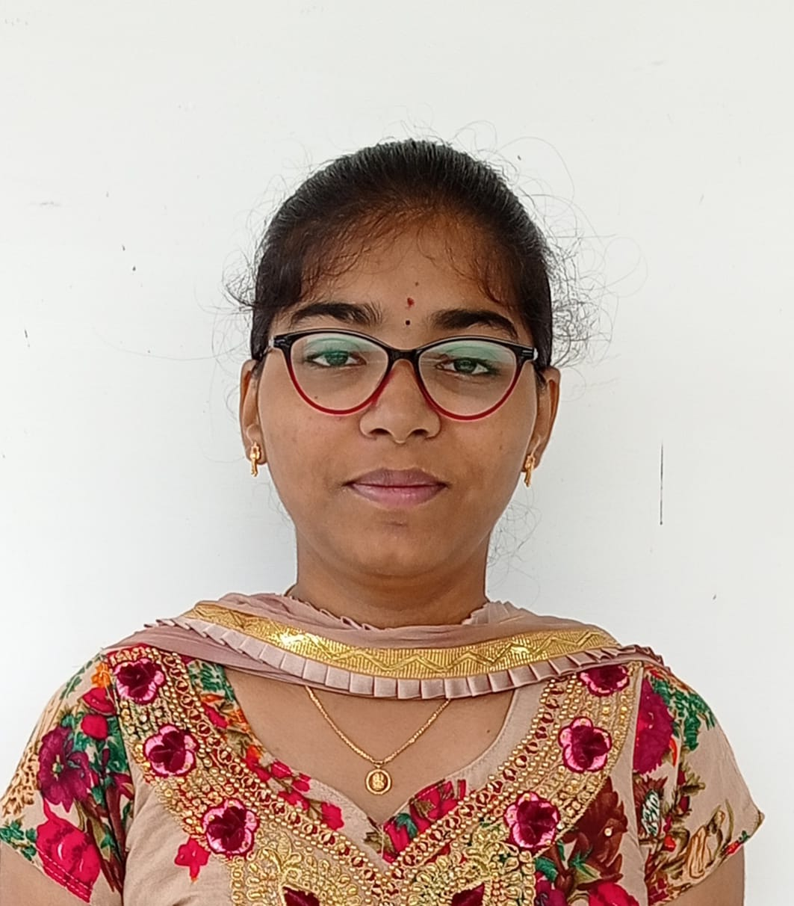

| Andhra Pradesh | ✉: madhurivinjam@gmail.com |  |
| Krishna District | ✆: 9876543210 |
I am a student with strong communication and a dump of presentation skills, I can be a good leader with effective leadership qualities. I can explore the content in a very effective way. Coming to the technical skills of mine, Programming is the best part of every technology and there won't be an end with this particular skill...So all I want to say is I am good at Python, JAVA, C and Front-End Coding, this is also glad to mention that I am very much interested in even Data Science which rules the world... As an young mind I do also maintain some extracurricular skills like Drawing, Designing, Getting best out of waste(i.e. craft), Dancing, Environment setting, Gardening, Public speaking, Sports (Basketball, Throwball) finally and especially Cooking which is really a passion of my personal life.